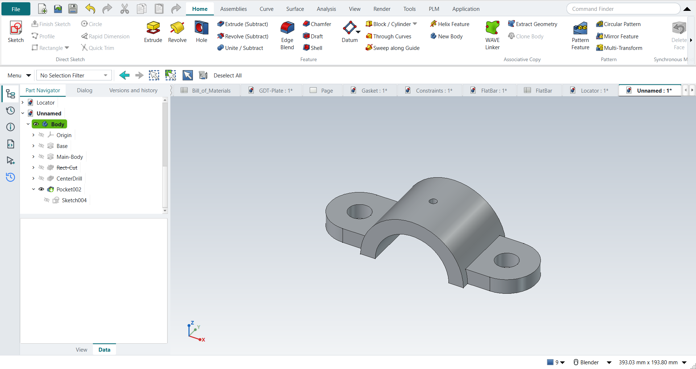

Tutorial M: The U-Bracket, parent/child relations
| Book |
Shih, Parametric Modeling with Siemens NX, ch. 7 |
| You learn |
Parent/child relations, renaming, Suppress and Unsuppress, sketching on the datum plane to drop a dependency |
| Sizes |
A plate with two Ø19.05 holes, a half-round body across it (−31.75 to 31.75 mm), a 50.8 × 25.4 mm cut under it and a Ø6.35 drill (the book’s 0.75, 1.25, 2.0 × 1.0 and 0.25 in). The plate’s end radius (R25.4) and the body’s radius (R44.45) are NotebookLM’s reading of the figures. |

In short
-
The plate with its holes; the half-round body, extruded Two sided.
-
The rectangular cut (Rect-Cut) under it, and the drill sketched on the cut’s face.
-
F2: name the features.
-
Select Rect-Cut, Home › Edit Feature › Suppress: the drill’s sketch loses its face.
-
Unsuppress; delete the drill and sketch it again on the datum XY plane: it no longer depends on the cut.
-
Suppress the rectangular cut and make an R31.75 round opening instead.
Step by step
| # | In the book (NX) | In FreeCAD NX-Style | Result | Notes |
|---|---|---|---|---|
M1 |
File > New, Model template, name U-Bracket |
Ctrl+N |
same |
named at the first save |
M2 |
Units in the New dialog (the book picks inches) |
metric part kept; book sizes typed in mm |
differs |
FreeCAD sets units in Preferences, not in the New dialog; NXStyle defaults to millimetres (document: Standard (mm, kg, s, °); 25.4 mm shows as 25.40 mm) |
M3 |
Extrude, the XY plane of the WCS |
X key, plane row + MB2 |
same |
picked XY-plane (Base plane) |
M4 |
Profile: two horizontal lines and two tangent arcs, MB2 twice |
Z key + MB1 clicks + MB2; the arcs and sizes applied |
differs |
4 curves clicked; NX switches Profile to an arc by dragging MB1, FreeCAD’s polyline by pressing M while drawing |
M5 |
Two circles on the arcs' centres; dimensions (Equal Radius if needed) |
O key + 2 MB1 clicks + MB2, twice; centres, Equal and the sizes applied |
same |
solver 'Fully constrained' (0 DoF); R1.00 ends 5.00 apart, Ø0.75 holes, centred on the origin |
M6 |
Extrude 0.5 in, OK |
Ctrl+Q, 'lengthEdit' = 12.7 mm, MB2 = OK |
same |
volume 100436.5 mm^3, expected 100436.5; 1 solid(s) |
M7 |
Extrude, the XZ plane of the datum coordinate system |
X key, plane row + MB2 |
same |
picked XZ-plane (Base plane) |
M8 |
Arc: centre on the sketch origin, end points on the edge; Line closing it; one radius dimension: fully constrained |
A key + 3 MB1 clicks + MB2, L key + 2 clicks + MB2; R1.75 |
same |
solver 'Fully constrained' (0 DoF); the book asks why one dimension is enough: the centre and the end points sit on the datum axes |
M9 |
Limits: Start -1.25, End 1.25, Boolean Unite, OK |
'Two sided', 'lengthEdit' = 'lengthEdit2' = 31.75 mm, MB2 = OK |
same |
volume 240949.5 mm^3, expected 240949.5; 1 solid(s); across -31.75 .. 31.75 mm. NX’s two limits are FreeCAD’s 'Two sided' (a length each way); features in a Body unite by themselves |
M10 |
Extrude, the front vertical face |
select Face7 + ribbon 'Home › Feature > Extrude (Subtract)' |
differs |
|
M11 |
Rectangle, dimensions 2.0 x 1.0 |
R key + 2 MB1 clicks + MB2; sizes applied |
same |
centred on the body, on the base plane |
M12 |
Subtract, Through All both ways, OK |
'Through all', MB2 = OK |
same |
volume 159014.2 mm^3, expected 159014.2; 1 solid(s); from the front face one way is all of it |
M13 |
Extrude, the underside face of the cut |
select Face15 + ribbon 'Home › Feature > Extrude (Subtract)' |
differs |
|
M14 |
More > Project Curve: the datum origin; Circle Ø0.25 on it |
the origin point projected (API: it is hidden in the view); O key + 2 clicks + MB2; Ø applied |
differs |
origin projected: True; NX picks the datum origin in the graphics window, FreeCAD’s origin point is hidden unless the Body’s origin is shown |
M15 |
Subtract, Through All, OK |
'Through all', MB2 = OK |
same |
volume 158411.0 mm^3, expected 158411.8; 1 solid(s) |
M16 |
Rename the features: Base, Main-Body, Rect-Cut, CenterDrill |
select + F2, type, Enter (4 times) |
differs |
NX: click the name twice; FreeCAD: F2 |
M17 |
Part Navigator > Dependencies: the parents of CenterDrill |
the feature’s links (sketch attachment, base feature) |
differs |
sketched on ['Rect-Cut'], cut from Rect-Cut: Rect-Cut is its parent, as in the book. FreeCAD shows these in the feature’s properties (Attachment, Base Feature) rather than a Dependencies panel |
M18 |
Suppress Rect-Cut: NX warns that CenterDrill cannot be placed |
Rect-Cut selected + ribbon 'Home › Edit Feature > Suppress' |
differs |
Rect-Cut suppressed True; FreeCAD cannot place the child either: its sketch says 'AttachEngine3D: subshape not found Pocket.Face15'. No message box: the error marks the sketch in the Part Navigator, and the part keeps its last shape (volume 158411.0 mm^3). NXStyle’s Suppress is new: FreeCAD 1.1 has the property but no command (its Freeze is different) |
M19 |
Suppress CenterDrill as well: the part shows the plate and the body only |
CenterDrill selected + ribbon 'Home › Edit Feature > Suppress' |
limit |
volume 158411.0 mm^3 (the plate and the body: 240949.5). FreeCAD 1.1.4 still recomputes the suppressed drill’s sketch, which cannot find its face, and stops there: Body, Sketch003, CenterDrill stay out of date. NX leaves a suppressed child alone. Unsuppressing the parent (the book’s next steps) brings the model back |
M20 |
Unsuppress CenterDrill: NX brings its parent Rect-Cut back too |
CenterDrill selected + ribbon 'Home › Edit Feature > Suppress' (a toggle) |
differs |
Rect-Cut back by itself: False. FreeCAD unsuppresses only the selected feature |
M21 |
Unsuppress Rect-Cut too: both back |
Rect-Cut selected + ribbon 'Suppress' |
same |
volume 158411.0 mm^3, expected 158411.8; 1 solid(s) |
M22 |
Delete CenterDrill (MB3 > Delete) |
CenterDrill selected + Delete key; its sketch deleted too |
same |
volume 159014.2 mm^3, expected 159014.2; 1 solid(s); feature gone True; FreeCAD keeps the feature’s sketch (True), NX removes it |
M23 |
A different approach (BORN): Extrude on the datum XY plane |
XY plane selected + ribbon 'Home › Feature > Extrude (Subtract)' |
differs |
|
M24 |
Circle Ø0.25 on the datum origin |
O key + 2 MB1 clicks + MB2; on the origin, Ø applied |
same |
DoF 0 |
M25 |
Subtract, Through All, OK |
'Through all', 'checkBoxReversed' on (up from the plane), MB2 = OK |
same |
volume 158411.0 mm^3, expected 158411.8; 1 solid(s); FreeCAD cuts away from the plane’s normal by default, so it is reversed to go up |
M26 |
Dependencies: the new drill’s parents are the XY plane and the base; Suppress Rect-Cut: the drill stays |
Rect-Cut selected + ribbon 'Home › Edit Feature > Suppress' |
same |
sketched on ['Origin']; drill valid True; volume 239541.9 mm^3 (expected 239542.7). In FreeCAD each feature is cut from the one before (Rect-Cut); a suppressed feature passes its input on, so that link does not break |
M27 |
Extrude, the front vertical face (circular cut) |
select Face8 + ribbon 'Home › Feature > Extrude (Subtract)' |
differs |
|
M28 |
Circle R1.25 centred on the datum origin |
O key + 2 MB1 clicks + MB2; R applied |
same |
the book’s text says 'rectangle', its figure and the design change a circle of radius 1.25 |
M29 |
Subtract, Through All, OK: the bracket with a round opening |
'Through all', MB2 = OK |
same |
volume 139996.8 mm^3, expected 139997.2; 1 solid(s); two design options now live in one model (Rect-Cut suppressed) |
M30 |
The U-Bracket is shown in the graphics window |
render of the graphics window |
same |
13.1% of the view shows the part |
| Result | Means |
|---|---|
same |
The book’s NX steps work as written. |
differs |
It works, but the FreeCAD way is different; the notes say how. |
limit |
The book’s way fails in FreeCAD itself; a workaround follows in the next steps. |
missing |
FreeCAD has no such function; a stand-in follows. |
skipped |
Not replayed; the notes give the reason. |
FAILED |
Did not work. |
What differs from NX
-
FreeCAD keeps a feature’s links in its properties (Attachment, Base Feature) rather than a Dependencies panel.
-
A suppressed feature passes its input on; a sketch attached to its face loses that face.
-
Suppressing the child as well still leaves the part out of date in FreeCAD 1.1.4 (M19); unsuppressing the parent brings it back.
-
Unsuppressing a child does not bring its parent back (NX does). Deleting a feature keeps its sketch.